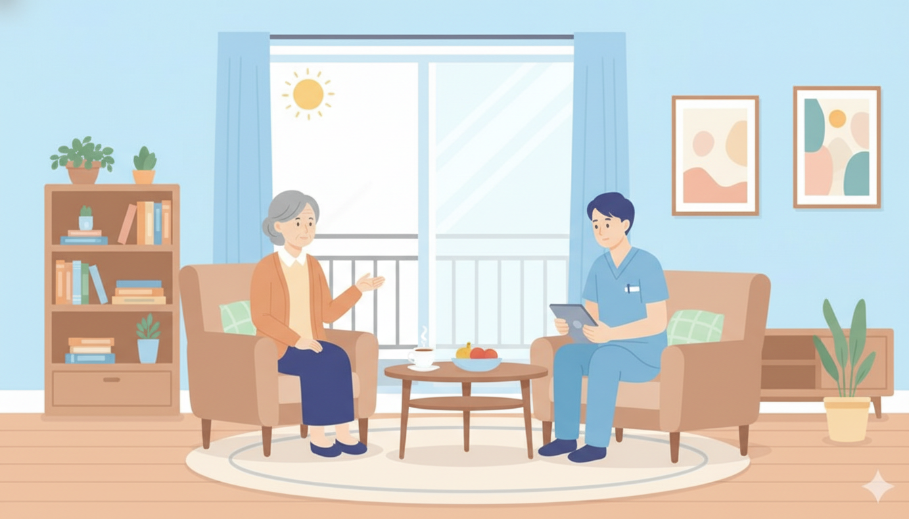

Visiting Nurse
訪問看護・居宅介護支援の2つのサービスを提供しております。『どうやって利用すればいいの？』『どんなサービスが使えるの？』など、難しくて分からないことがたくさんあると思います。どうぞ、お気軽にご相談下さい。
Visiting Nurse
高齢者の方や病気やけが等により在宅療養を必要とされる方に対して、経験豊富な看護師が看護サービスを提供致します。サービスの内容は主治医の指示の下、ご本人やご家族のご希望を考慮した上で看護計画を立ててご提供致します。
訪問看護のご利用を希望される方は、居宅介護支援事業者（ケアマネジャー）またはかかりつけ医にご相談ください。
ケアマネジャーがケアプランを作成し、サービス提供票を訪問看護ステーションへ発行します。
主治医が訪問看護指示書を作成し、訪問看護ステーションへ交付します。
看護計画を作成の上、ご自宅へ訪問してサービスを開始します。
※居宅介護支援事業所を併設しておりますので、ご相談下さい。
※かかりつけ医がいらっしゃらない場合は、ご相談下さい。
Home Care Support
ケアマネジャーが利用者ご本人やそのご家族のご希望をお伺いし、身体の状態を踏まえた上で、その方に合ったサービスを計画致します。また、サービス提供事業者との連絡・調整を行うことで、サービスの利用をスムーズに進めます。
居宅介護支援事業者へご依頼ください。
問題点や現状を把握するため、ケアマネジャーがお伺いします。内容を基に、計画の原案を作成します。
担当のケアマネジャーを中心に、ご本人・ご家族・サービス事業者の3者で検討・調整を行います。
サービス計画の内容について同意を頂いた上で、サービスが開始されます。

※サービスの提供が開始された後でも、必要に応じてサービス計画の見直しを致しますので、お気軽にご相談下さい。